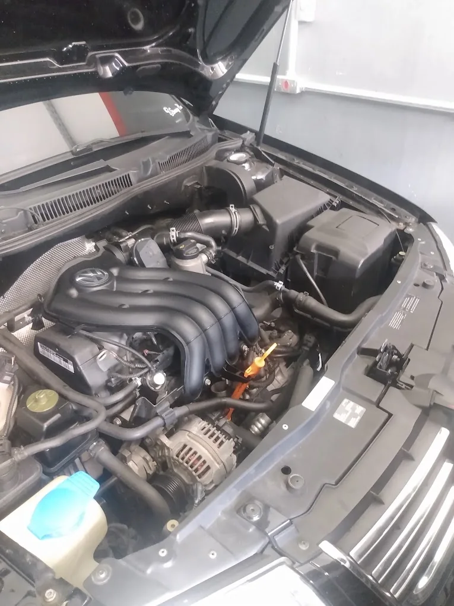
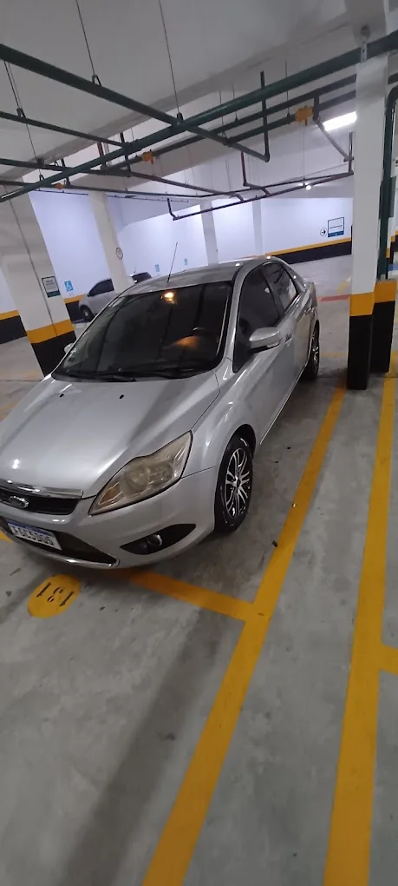
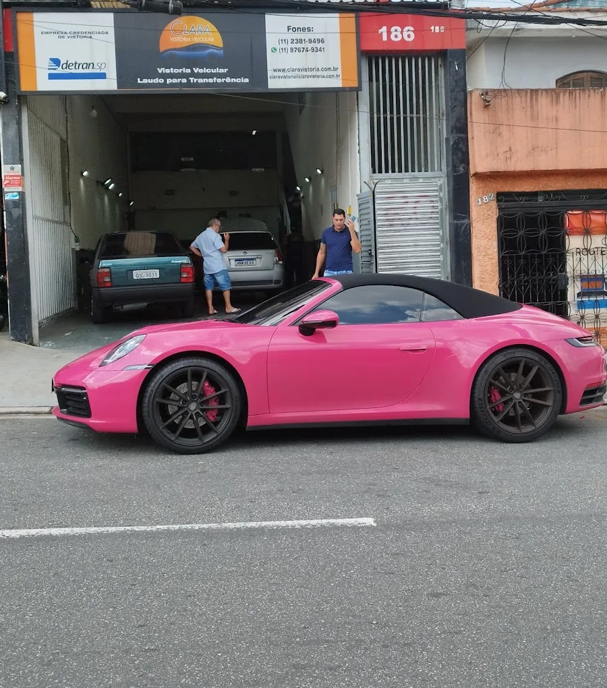

Motor e diagnóstico
Diagnóstico de motor, velas de ignição, limpeza de carburador e troca de correia dentada.

Barulho na suspensão, luz no painel ou revisão atrasada? Conte o que está acontecendo e agende uma avaliação na CPL.

A CPL Auto Mecânica atende na Av. Luiz Pequini, em Santa Terezinha. Da troca de óleo ao diagnóstico do motor, a oficina reúne serviços de manutenção e reparo para quem usa o carro no dia a dia.
Se o problema aparece só na partida, ao frear ou em determinada velocidade, conte isso no primeiro contato. Esses detalhes ajudam a orientar a avaliação.
Falar com a oficina ↗Diagnóstico de motor, velas de ignição, limpeza de carburador e troca de correia dentada.
Reparos em freios, direção, suspensão e amortecedores.
Alinhamento e calibragem de rodas.
Diagnóstico elétrico, reparos no sistema elétrico e serviços de bateria.
Troca de óleo e lubrificantes, filtros de ar e cabine e serviços de ar-condicionado.
Reparos na transmissão e nos vidros e limpeza automotiva.

“Os caras são extremamente técnicos, serviço top e com preço justo!”
“Ótimo lugar muito limpo excelencia no trabalho”
“Desta vez fui com outro carro e, novamente, saí satisfeita com o resultado.”